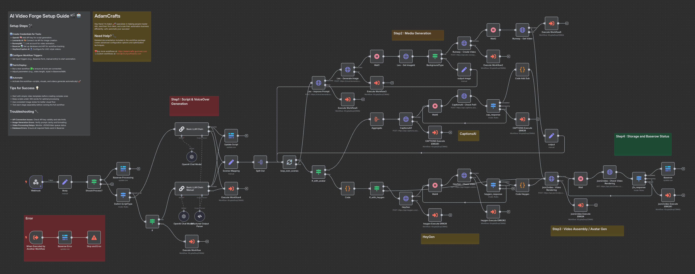

Hands-on Weiterbildung für Frauen in Führungspositionen — mit echten Skills, echten Projekten und Blueprints die sofort im Joballtag funktionieren.
Hier liegen die Baupläne für deine Automatisierung. Transparent, hands-on und direkt anwendbar — bevor du auch nur einen Euro investierst.
Kein Coaching-PDF. Keine Versprechen. Echte Workflows, echte Blueprints, echter Code. Was im Kurs gelehrt wird, liegt offen in der Werkstatt — dokumentiert, nachvollziehbar, zum Nachbauen.
Ein Blueprint zeigt eine vollständig automatisierte Aufgabe: das Problem, den Lösungsweg, den fertigen Workflow als JSON-Datei zum Download. Du siehst nicht nur das Ergebnis — du siehst jeden Schritt.
Vollautomatischer Workflow von der Recherche bis zur Veröffentlichung.
KI-gestützter Vorfilter für eingehende Bewerbungen.
Standardisierte Reports und Abweichungsanalysen auf Knopfdruck.
Automatisierte Verarbeitung und Klassifikation von Dokumenten.

Alle Blueprints inklusive Screenshots, Erklärungen und JSON-Dateien · Gehostet auf GitHub · Kein Account erforderlich zum Ansehen
Die KI-Welle trifft diesmal nicht die Fabrikhallen — sie trifft Wissensarbeit. Datenanalyse, Reporting, Content, Recruiting, Dokumentenprüfung: Tätigkeiten in denen Frauen mit guten Gehältern stark vertreten sind. Wer die Werkzeuge kennt, wird nicht ersetzt — wer sie nicht kennt, schaut zu.
Senior Marketing Manager, Brand Director, Content Lead
PR-Managerin, Communications Lead, Pressesprecherin
HR Business Partner, Head of Recruiting, People Manager
Senior Controllerin, Finance Manager, Risk Analyst
In-house Counsel, Compliance, Verwaltungsmanagerin
IT-Projektleiterin, Senior Consultant, Business Analyst
Du brauchst keine Programmiererfahrung. Du brauchst die Bereitschaft, Logik zu verstehen — nicht auswendig zu lernen. Wer komplexe Geschäftsprozesse managt, bringt das Fundament bereits mit.
Kein Überblick-Seminar. Kein Zuschauen. Du baust, du verstehst, du nimmst Ergebnisse mit die sofort einsetzbar sind.
Nicht wie ein Seminar. Nicht wie ein Webinar. Kein Zuschauen und Nicken.
Du siehst nicht nur das Endergebnis — du erlebst den Denkprozess dahinter. Jeder Schritt wird erklärt bis er sitzt.
Hands-on Projekte von Anfang an. Du baust, machst Fehler, verstehst warum — und baust besser.
Du gehst mit fertigen Blueprints, eigenem Workflow und dem Werkzeug-Set um das nächste selbst zu bauen.
Tiefes Lernen braucht Abstand vom Büro-Alltag. Zwei Wochen ohne Meeting-Unterbrechungen, ohne E-Mail-Flut, ohne halbfertige Gedanken. Nur Fokus — und Raum für das was danach kommt.
Unterkunft wird individuell gebucht — Empfehlungen für die Region werden bereitgestellt.
Ratenzahlung möglich: 6 × 500 €
Der Kurs endet. Der Zugang zur Community nicht.
Start der kostenlosen Discord-Community: Ab August 2026 — auch vor dem Bootcamp schon dabei sein.
Maximal 6 Plätze. Wer die Werkstatt kennt und weiß was sie will, ist hier richtig.